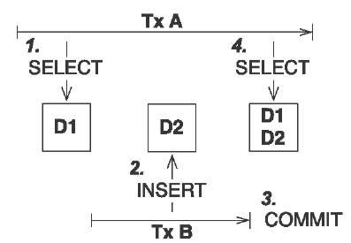

@Stateless
public class TestBean {
@TransactionAttribute(TransactionAttributeType.REQUIRES_NEW)
public void doWork() {
// do something
}
}Transactions in Java
Ondra Chaloupka / ochaloup@redhat.com
Transactions in Java ?
Transactions in Java !?

Agenda
Terminology
Resource local transactions in Java SE
Database
JMS
Transactions in Java EE (on JBoss)
Java Transaction API (JTA)
Java Persistence API (JPA)
Bean managed transactions (BMT)
Container managed transactions (CMT)
Terminology corner
A transaction
A transaction is a group of business logic statements with certain shared properties.
Which are one or more of:
Atomic, Consistent, Isolated, Durable
ACID
Atomicity
Consistency
Isolation
Durablitity
Other transaction "types"
BA (Business Activities)
BTP
WS-CAF
WS-TX (WA-AT and WS-BA)
Extended transactions
BASE
Transaction types
Top-level
Nested
Nested top-level
Concurrent nested
Transaction types (contd.)
Resource local
Global transaction
Distributed transaction
XA vs. Distributed transaction
XA - XA/Open XA architecture - multiple resources
Distributed - multiple transaction managers
Transactions from developer point of view
Local transaction model
connection.commitProgrammatic transaction model
transaction.commit()Declarative transaction model
@TransactionAttribute(TransactionAttributeType.REQUIRED)
Databases and JDBC
Database transaction
BEGIN;
INSERT INTO test_table VALUES (1, 'test');
COMMIT;Isolation level
Lost update
shamelessly stolen from http://what-when-how.com
Dirty reads
shamelessly stolen from http://what-when-how.com
Non-repeatable reads
shamelessly stolen from http://what-when-how.com
Phantom reads

shamelessly stolen from http://what-when-how.com
Quiz
java.sql.Connection connection = DriverManager.getConnection(...)
Statement st = connection.createStatement();
st.execute("INSERT INTO table VALUES (1, 'EAP QE')");Quiz - Answer
java.sql.Connection connection = DriverManager.getConnection(...)
connection.setAutoCommit(false);
Statement st = connection.createStatement();
st.execute("INSERT INTO table VALUES (1, 'EAP QE')");
connection.commit();JDBC
Connection.setAutoCommit
Connection.setTransactionIsolation
JDBC batch
java.sql.Connection connection = DriverManager.getConnection(...)
connection.setAutoCommit(false);
Statement st = connection.createStatement();
st.addBatch("INSERT INTO table VALUES (1, 'JTA')");
st.addBatch("INSERT INTO table VALUES (2, 'JCA')");
int[] updateCounts = st.executeBatch();
connection.commit();JDBC "nested" transactions
java.sql.Connection connection = DriverManager.getConnection(...)
connection.setAutoCommit(false);
Statement st = connection.createStatement();
st.execute("INSERT INTO table VALUES (1, 'EAP 6')");
Savepoint savePoint = connection.setSavepoint();
st.execute("UPDATE table SET product='EAP 7' WHERE id=1");
connection.rollback(savePoint);
connection.commit();Be aware of DDL commands
DDL - data definition language (CREATE, DROP…)
DML - data manipulation language (INSERT, UPDATE…)
lot of Databases does not support transactional DDL
JMS
Transactions and redelivery
Session creation
Connection.createSession(boolean transacted, int acknowledgeMode)Session.AUTO_ACKNOWLEDGESession.DUPS_OK_ACKNOWLEDGESession.CLIENT_ACKNOWLEDGESession.SESSION_TRANSACTED
Quiz
What happens on JMS transaction rollback?
Quiz - Answer
automatic redelivery rollbacked messages
redelivery count could be defined
redelivery timeout could be defined
exceptional destination (message is non-deliverable)
message is only logged
message is forwarded to an error destination
message is forgotten
Java EE
JBoss sources configuration
Datasource
<datasource jta="true" jndi-name="java:jboss/datasource-test" pool-name="datasource-test" enabled="true" use-java-context="true" spy="true">
<connection-url>jdbc:postgresql://localhost:5432/crashrec</connection-url>
<driver>database-jdbc-driver.jar</driver>
<security>
<user-name>crashrec</user-name>
<password>crashrec</password>
</security>
<transaction-isolation>TRANSACTION_READ_COMMITTED</transaction-isolation>
</datasource>XA Datasource
<xa-datasource jndi-name="java:jboss/xa-datasource-test" pool-name="xa-datasource-test" enabled="true" spy="true">
<xa-datasource-property name="PortNumber">
5432
</xa-datasource-property>
<xa-datasource-property name="ServerName">
localhost
</xa-datasource-property>
<xa-datasource-property name="DatabaseName">
crashrec
</xa-datasource-property>
<xa-datasource-class>org.postgresql.xa.PGXADataSource</xa-datasource-class>
<driver>database-jdbc-driver.jar</driver>
<security>
<user-name>crashrec</user-name>
<password>crashrec</password>
</security>
</xa-datasource>JMS configuration (HornetQ)
See standalone-full.xml
JTA
Quiz
What is the JTA/Transaction Manager for?
Quiz - Answer
Managing transactions :)
High-level API that allows application and application server to demarcate transaction boundaries
Machinery of two phase commit protocol
Java mapping of X/Open XA protocol
Local managers are not thread safe
Recovery management
Timeout setting
Rollback-only behaviour setting
Distributed transactions
JTA a bit on history
Implementation of X/Open XA architecture (JSR 907)
Versions
1.0 - year 2000
1.1 - year 2007 (EE 5)
1.2 - year 2013 (EE 7)
Specifications - a bit messy
JTA (JSR 907) maps XA spec to Java
XA spec from year 1991 by The Open Group
JTS spec maps OTS spec to Java
OTS spec by Object management Group (OMG)
JCA, JMS, JDBC, EJB contains sections about transactions
WS-AT and WS-BA under OASIS standard
Implementations
*Transaction Manager*
Narayana JBoss TM (Arjuna formerly)
Atomikos
Bitronix
Glassfish reference implementation
…

JTA vs. JTS
Difference of JTA and JTS has some parallel in difference JDBC to the database driver.
JTA API overview
UserTransaction
TransactionManager
Status
Transaction
Synchronization
TransactionSynchronizationRegistry
XAResource
JPA
JPA overview in short
ORM (Object-relational mapping)
EclipseLink (reference), Hibernate (JBoss)
Benefits (theoretically)
staying in object oriented world
independent on underlaying database
simplified CRUD
JPQL (db independent + simplified join queries)
automatic table creation (hbm2dll)
performance (lazy dml, batching sql, 2nd level cache)
SQL table creation
CREATE TABLE PERSON (
id INTEGER NOT NULL DEFAULT ('person_seq'),
username VARCHAR(255),
birthdate DATE,
...
)Java entity definition
@Entity
@Table("person")
public class Person {
@Id
@GeneratedValue
private int id;
private String username;
@Temporal(TemproalType.DATE)
private Date birthDate;
@ManyToMany
@JoinTable(name = "PERSON_GROUP",
joinColumn = @JoinColumn(name = "person_id"),
inverseJoinColumn = @JoinColumn(name = "group_id"))
private List<Groups> groups;
...
}Entity Manager in Java SE
EntityManagerFactory emf = Persistence.createEntityManagerFactory("MyPersistenceUnit");
EntityManager em = emf.createEntityManager();
em.getTransaction().begin();
Person person = new Person();
person.setName("JBoss EAP 6");
em.persist(person);
em.getTransaction().commit();
em.close();
emf.close();Entity Manager in Java EE
@Stateless
public SomeBean() {
@PersistenceContext
EntityManager em;
public void newPerson() {
Person person = new Person();
person.setName("JBoss EAP 6");
em.persist(person);
}
}Persistence.xml in Java SE
<persistence-unit name="ResourceLocalPersistenceUnit" transaction-type="RESOURCE_LOCAL">
<class>org.jboss.qa.tspresentation.Person</class>
<properties>
<property name="hibernate.connection.url" value="jdbc:postgresql://localhost:5432/crashrec?loglevel=2"/>
<!-- <property name="hibernate.dialect" value="org.hibernate.dialect.PostgreSQL82Dialect"/> -->
<property name="hibernate.connection.driver_class" value="org.postgresql.Driver"/>
<property name="hibernate.connection.username" value="crashrec"/>
<property name="hibernate.connection.password" value="crashrec"/>
<property name="hibernate.hbm2ddl.auto" value="update"/>
<property name="hibernate.show_sql" value="true"/>
<property name="hibernate.format_sql" value="true"/>
</properties>
</persistence-unit>Persistence.xml in Java EE
<persistence-unit name="TestPersistenceUnit" transaction-type="JTA">
<jta-data-source>java:jboss/datasource-test</jta-data-source>
<properties>
<property name="hibernate.dialect" value="org.hibernate.dialect.PostgreSQL82Dialect"/>
<property name="hibernate.temp.use_jdbc_metadata_defaults" value="true" />
<property name="hibernate.hbm2ddl.auto" value="update"/>
<property name="hibernate.show_sql" value="true"/>
<property name="hibernate.format_sql" value="true"/>
</properties>
</persistence-unit>em.flush() and em.clear()
EntityManager em = emf.createEntityManager();
em.getTransaction().begin();
Person person = em.find(Person.java, 1L);
person.setName("JBoss EAP 7");
// em.flush()
em.getTransaction().commit();
em.clear();Transactions in JPA
Transaction management defined by transaction-type (persistence.xml)
Connected with persistence context type
Any update operation has to be proceeded inside of a transaction
Read operation could be proceeded out of the transaction
Persistence context types
Application-managed
RESOURCE_LOCAL/Java SE
ends (is cleared) on manual call of clear method or em.remove(entity)
Container-managed Transaction-scoped
ends at the end of transaction
Container-managed Extended
used only with SFSB
ends when SFSB method
@Removeis calledduring the time several transactions could be committed
A side note: locking
Optimistic
@Versionat attributeem.lock(person, LockModeType.OPTIMISTIC)
Pesimistic
em.lock(persion, LockModeType.PESIMISTIC_WRITE)
Transactions in Application Server
How to get the method being transactional
EJB method is transactional by default
CDI -
@TransactionalTo get it
@Resource/@Inject UserTransaction utx;@Resource SessionContext ctx;java:comp/UserTransactionjava:jboss/TransactionManager
EJB Bean-managed transactions
Bean-managed transaction
@Resource
SessionContext ctx;
public void method(){
try {
UserTransaction utx = ctx.getUserTransaction();
utx.begin();
...
utx.commit();
} catch(Exception e) {
utx.rollback();
}
}Limitation of usage
Session beans (@Stateful, @Stateless, @Singleton)
Message driven beans (@MessageDriven)
Entity bean (EJB 2.0) can only be CMT
Stateful beans can’t use SessionSynchronization
Quiz
@Stateless
public void MyBean {
@Resource
UserTransaction utx;
public void method(){
try {
utx.begin();
...
// utx.commit(); <---
} catch(Exception e) {
utx.rollback();
}
}
}Quiz
@Stateless
@TransactionManagement(TransactionManagementType.BEAN)
public void MyBean {
@Resource
UserTransaction utx;
public void method() {
try {
utx.begin();
...
// utx.commit(); <---
} catch(Exception e) {
utx.rollback();
}
}
}Quiz (contd.)
@Stateful
@TransactionManagement(TransactionManagementType.BEAN)
public void MyBean {
@Resource
UserTransaction utx;
public void method() {
try {
utx.begin();
...
// utx.commit(); <---
} catch(Exception e) {
utx.rollback();
}
}
}Quiz - Answer
Stateless, Singleton, MDB: EJB container ensures that transaction won’t leave a method uncommitted
EJBException ("should complete transaction before returning") + rollback done by container
Stateful: transaction can flow over several method invocations on the same SFSB instance
Quiz
@Stateless
@TransactionManagement(TransactionManagementType.BEAN)
public void MyBean {
@Resource
UserTransaction utx;
public void method() {
try {
utx.begin();
utx.setTransactionTimeout(30); // seconds
...
utx.commit();
} catch(Exception e) {
ut.rollback();
}
}
}Quiz - Answer
Nothing will happen. Transaction timeout has to be set before transaction is started.
Exception handling
In difference from CMT you need to handled it on your own (at least partly).
Message Driven Bean
transaction context does not flow with a JMS message
handled by JCA in-flow protocol
Bean managed transaction
message receive is not part of tranaction
you can start new transaction inside of onMessage method but received message is already acknowledged
Container managed transaction
REQUIRED - new transaction at onMessage method start
NOT_SUPPORTED - no transaction - acknowledge mode
EJB Container-managed transactions
Annotations under use
@TransactionManagement
@TransactionAttribute
@TransactionTimeout
@ApplicationException
Transaction attributes
REQUIRED
REQUIRES_NEW
MANDATORY
NOT_SUPPORTED
SUPPORTS
NEVER
Easy peasy
@Stateless
// @TransactionAttribute(TransactionAttributeType.REQUIRED)
public class MyBean {
public void method() {
// work with application managed resource
// working directly with a database connection or
// jms session won't bring you any transactional advantages
}
}Quiz
@Stateless
public class MyBean {
public void createNewUser(String name) {
UserEntity user = new UserEntity(name);
em.persist(user);
long numberOfUsersBeforeCommit = getNumberOfUsers();
}
@TransactionAttribute(TransactionAttributeType.REQUIRES_NEW)
public long getNumberOfUsers() {
String sql = "SELECT COUNT(u.id) FROM UserEntity u";
Query q = em.createQuery(sql);
return (long) q.getSingleResult();
}
}Quiz - Answer
@Stateless
public class MyBean {
@EJB
private MyBean thisBean;
public void createNewUser(String name) {
UserEntity user = new UserEntity(name);
em.persist(user);
long numberOfUsersBeforeCommit = thisBean.getNumberOfUsers();
}
@TransactionAttribute(TransactionAttributeType.REQUIRES_NEW)
public long getNumberOfUsers() {
String sql = "SELECT COUNT(u.id) FROM UserEntity u";
Query q = em.createQuery(sql);
return (long) q.getSingleResult();
}
}Quiz
@Stateless
public class MyBean {
@EJB
private CityFinder cityBean;
public void create(String name, String cityName) {
UserEntity user = new UserEntity(name);
em.persist(user);
CityEntity city = cityBean.findCity(cityName);
user.setHomeTown(city);
}
}
@Stateless
@TransactionAttribute(TransactionAttributeType.REQUIRES_NEW)
public class CityFinder {
public CityEntity findCity(String cityName) {
String q = "select c from CityEntity c where c.name=:name";
Query query = Query.createQuery(q).setParameter("name", cityName);
try{
return (CityEntity) query.getSingleResult();
} catch(NoResultException nre){
return null;
}
}
}Quiz - Answer
This fails as city was found in new transaction where em was closed at the end. Entity became detached
You set detached city entity reference to managed user entity.
Exception handling
Exception which causes rollback
RuntimeException
EJBException
@ApplicationException(rollback = true, inherited = true)
Quiz
@Stateless
public class MyBean {
@EJB
private MyBean thisBean;
public void createNewUser(String name) {
try {
thisBean.doSomeWork();
} catch (Exception e) {
log.warn("The work failed but we will create user for you either");
}
UserEntity entity = new UserEntity(name);
em.persist(entity);
}
public long doSomeWork() {
// do some business but unfortunatelly something goes wrong...
throw new RuntimeException();
}
}Quiz - Answer
The transaction is marked as setRollbackOnly.
As RuntimeException surpassed the bean boundaries container will marked it as rollback and the whole transaction will be rollbacked nevertheless the exception was caught.
Quiz
@Stateless
public class TableCreator {
@Resource
DataSource datasource;
public void create() {
try(Connection connection = datasource.getConnection()) {
Statement st = connection.createStatement();
st.execute(""CREATE TABLE user (id INTEGER NOT NULL UNIQUE, name VARCHAR(255))"");
} catch (SQLException sqle) {
// ignore this as table already exists
}
}
}
@Stateless
public class Inserter {
@PersistenceContext
private EntityManager em;
@EJB
private TableCreator creator;
public void call() {
creator.create();
UserEntity entity = new UserEntity("EAP QE");
em.persist(entity);
}
}Quiz - Answer
@Stateless
public class TableCreator {
@Resource
DataSource datasource;
@TransactionAttribute(TransactionAttributeType.REQUIRES_NEW)
public void create() {
try(Connection connection = datasource.getConnection()) {
Statement st = connection.createStatement();
st.execute(""CREATE TABLE user (id INTEGER NOT NULL UNIQUE, name VARCHAR(255))"");
} catch (SQLException sqle) {
// ignore this as table already exists
}
}
}
@Stateless
public class Inserter {
@EJB
private TableCreator creator;
public void call() {
creator.create();
UserEntity entity = new UserEntity("EAP QE");
em.persist(entity);
}
}Transaction context propagation
propagation works from BMT to CMT
NOT propagated to BMT
transaction from BMT is suspended
CMT → BMT - not propagated
@Stateless
@TransactionManagement(TransactionManagementType.BEAN)
public void BmtBean {
public void do() {
// do something
}
}
@Stateless
public class CmtBean {
@EJB
private BmtBean bean;
public void work() {
bean.do();
}
}BMT → CMT - propagated
@Stateless
public class CmtBean {
public void work() {
// do something
}
}
@Stateless
@TransactionManagement(TransactionManagementType.BEAN)
public void BmtBean {
@Resource
UserTransaction utx;
@EJB
private CmtBean bean;
public void method() {
try {
utx.begin();
bean.work();
utx.commit();
} catch(Exception e) {
ut.rollback();
}
}
}CDI transactional management
@Transactional and @TransactionScoped
@Transactional
javax.transaction.TxType value
Class[] rollbackOn
Class[] dontRollbackOn
@TransactionScoped
References
Presentation https://github.com/ochaloup/ts-presentation
Java Transaction Design Strategies http://www.infoq.com/minibooks/JTDS
Transakce v Java EE (Kamil Š eveček) https://www.youtube.com/watch?v=6q9NIRBHd5I
Java Transaction Processing http://www.amazon.com/Java-Transaction-Processing-Design-Implementation/dp/013035290X
My bookmarks on http://delicious.com/chalda/ts.presentation